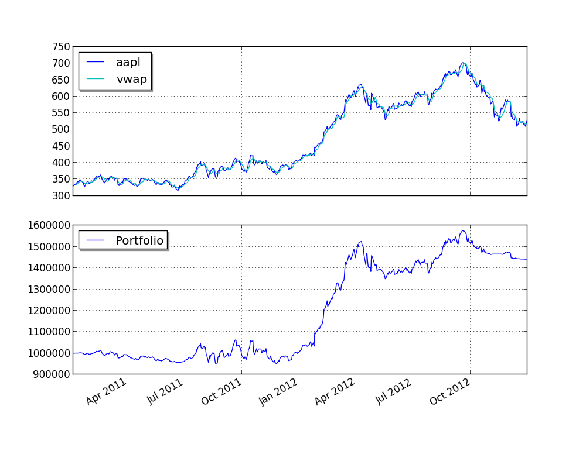

VWAP动量交易¶
from pyalgotrade import strategy
from pyalgotrade import plotter
from pyalgotrade.tools import yahoofinance
from pyalgotrade.technical import vwap
from pyalgotrade.stratanalyzer import sharpe
class VWAPMomentum(strategy.BacktestingStrategy):
def __init__(self, feed, instrument, vwapWindowSize, threshold):
strategy.BacktestingStrategy.__init__(self, feed)
self.__instrument = instrument
self.__vwap = vwap.VWAP(feed[instrument], vwapWindowSize)
self.__threshold = threshold
def getVWAP(self):
return self.__vwap
def onBars(self, bars):
vwap = self.__vwap[-1]
if vwap is None:
return
shares = self.getBroker().getShares(self.__instrument)
price = bars[self.__instrument].getClose()
notional = shares * price
if price > vwap * (1 + self.__threshold) and notional < 1000000:
self.marketOrder(self.__instrument, 100)
elif price < vwap * (1 - self.__threshold) and notional > 0:
self.marketOrder(self.__instrument, -100)
def main(plot):
instrument = "aapl"
vwapWindowSize = 5
threshold = 0.01
# Download the bars.
feed = yahoofinance.build_feed([instrument], 2011, 2012, ".")
strat = VWAPMomentum(feed, instrument, vwapWindowSize, threshold)
sharpeRatioAnalyzer = sharpe.SharpeRatio()
strat.attachAnalyzer(sharpeRatioAnalyzer)
if plot:
plt = plotter.StrategyPlotter(strat, True, False, True)
plt.getInstrumentSubplot(instrument).addDataSeries("vwap", strat.getVWAP())
strat.run()
print("Sharpe ratio: %.2f" % sharpeRatioAnalyzer.getSharpeRatio(0.05))
if plot:
plt.plot()
if __name__ == "__main__":
main(True)
本例输出结果如下:
2013-09-21 00:01:23,813 yahoofinance [INFO] Creating data directory
2013-09-21 00:01:23,814 yahoofinance [INFO] Downloading aapl 2011 to data/aapl-2011-yahoofinance.csv
2013-09-21 00:01:25,275 yahoofinance [INFO] Downloading aapl 2012 to data/aapl-2012-yahoofinance.csv
Sharpe ratio: 0.89
最终结果绘制如下图所示:
你可以通过调整VWAP和参数阈值得到更高的回报。